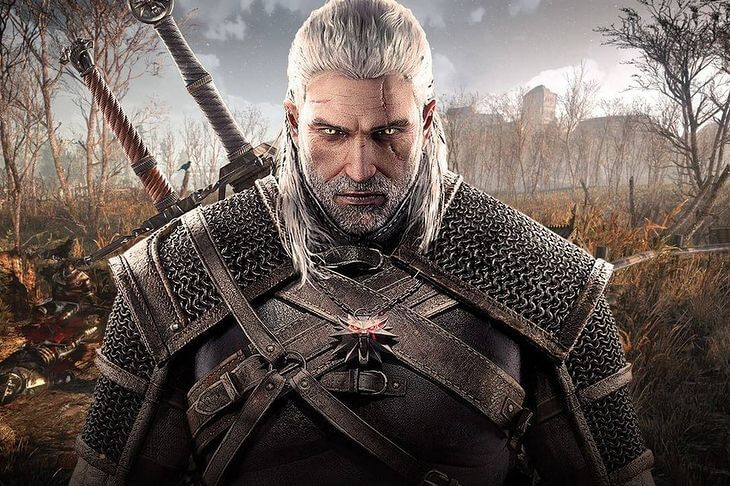
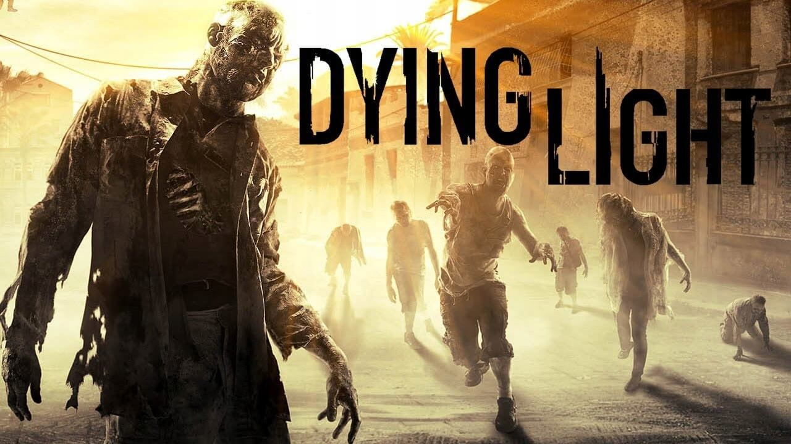
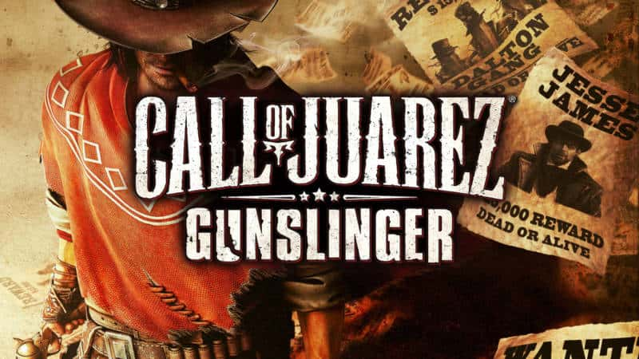
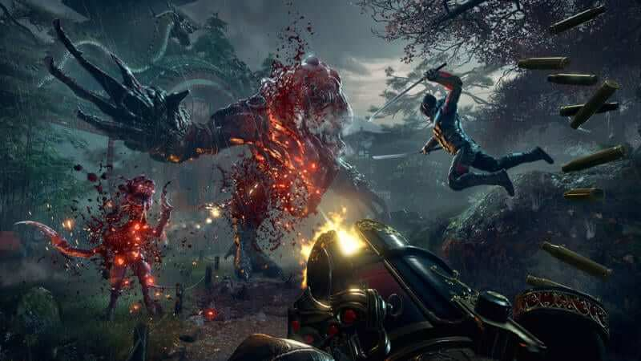

Polish music
Lemon
Lemon - Polish-Lemko-Ukrainian pop-rock band, founded in 2011 on the initiative of vocalist Igor Herbut. See other songs
Kamil Bednarek
Kamil Bednarek also known as a "MaccaBraa" – author the lyrics and songs, performer of
reggae music, very famous singer in Poland his debut began in the "Voice of Poland"
Polish TV show. His
voice and style is really unique so I recommend you to check his other songs
See other songs
Natalia Kukulska
Natalia Kukulska one of the most famous female singers in Poland. She recorded even one song with one of the best Polish raper from Poland TEDE See other songs
Dżem
Dżem is the blues band from Poland "Rysiek Riedel" was a really good performer and artist, a lot of songs are made with real feelings. If you are fan of blues music I'm sure you will like it :) See other songs
Kombii
It was the classic band from my childhood and everyone's born in 90s. I'm not sure you
can see through our website but you can
See other songs
Quebonafide
Is the one of Polish Trapers :) I think these days he's best in his kind from Polish rap Quebo is an owner of QueQuality music label See other songs
TEDE
Jacek Maciej Szymon Graniecki, more recognizable as TEDE - the classic of bragga raper from Poland, songwriter and music producer, as well as entrepreneur, actor and television personality. His albums have been distributed in over 220,000. copies in Poland, and the artist himself has been nominated five times for the Fryderyk Award. See other songs
Guzior
Guzior is a Polish living in Japan, he's not that much known but he makes really good
music :) so why I recommend you to check it. Especially to all Japanese loving rap
See other songs
JWP
JWP is the most popular Hip-hop band from WARSAW it's classic, everyone loves hip-hop will love their songs :) See other songs
Afromental
Afromental is the only one boysband from Poland which makes songs in ENGLISH it's good to
try to listen them out :)
See other songs
Enej
Enej Polish-Ukrainian music band performing music from the borderland of folk, rock, ska, punk and widely understood Ukrainian alternative, founded in 2002 in Olsztyn, by brothers Piotr and Paweł Sołoduchów and their friend Łukasz Kojrys, currently acting as a band manager. Kamień z napisem LOVE (A stone with the inscription LOVE) made this band more popular in Poland See other songs
All Polish lyrics you can find on tekstowo.pl
This MEDIA page is gonna be updated every week
written by
@RobertPolish movies
I will publish Polish movies that you can see on the NETFLIX platform ;) with new update I will show you classical Polish movies and some good comedy and try to help you where you can find with English subtitles. Click on see more to see the list.
365 dni / 365 days
365 Days (Polish: 365 Dni) is a 2020 Polish erotic drama film directed by Barbara Białowąs and Tomasz Mandes. It is based on the first novel of a trilogy written by Blanka Lipińska. The plot follows a young Warsaw woman in a spiritless relationship falling for a dominant Sicilian man who imprisons her and grants 365 days to fall in love with him. It stars Anna-Maria Sieklucka as Laura Biel and Michele Morrone as Massimo Torricelli. The film was released theatrically in Poland on 7 February 2020 and was later made available on Netflix, quickly gaining global attention Watch on Netflix
Escape from the 'Liberty' Cinema
Escape from the 'Liberty' Cinema (Polish: Ucieczka z kina "Wolność") is a 1990 Polish drama film directed by Wojciech Marczewski. It was screened in the Un Certain Regard section at the 1991 Cannes Film Festival. Watch on Netflix
Gods
Gods (Polish: Bogowie) is a 2014 Polish dramatic feature film directed by Łukasz
Palkowski. It is based on the life and career of Polish cardiac surgeon Zbigniew Religa,
who performed the first successful heart transplant in Poland in 1987. The movie
received the Golden Lions award for best film at the 39th Gdynia Film Festival (2014)
and the Eagle at the Polish Film Awards (2015).
Production of the film took place in autumn 2013.
Watch on Netflix
Wołyń
Despite being in love with a Ukrainian boy from the same village, Polish girl named Zosia is forced into marrying a wealthy widower. Soon World War II begins and ethnic tensions arise. Amidst the war chaos Zosia tries to survive. Watch on Netflix
Zemsta
Zemsta (Revenge) is a Polish comedy by Aleksander Fredro, a Polish poet, playwright and author active during Polish Romanticism in the period of partitions. Zemsta belongs to the canon of Polish literature. It is a play in four acts, written in the octosyllabic verse mostly in the vernacular of Lesser Poland (Małopolska); filled with proverbs and paraphrased allusions. Watch on Netflix
This MEDIA page is gonna be updated every week
written by
@RobertPolish games
Poland has not much Polish games like U.S. or South Korea. But still we go something we can be proud of! :)
One of Polish game was that much good it was an inspiration for others. Click on see more to check Polish games.
THE WITCHER!
The Witcher (Polish: Wiedźmin [ˈvʲɛd͡ʑmʲin]) is a 2007 action role-playing game developed
by CD Projekt Red and published by Atari on Microsoft Windows and CD Projekt on OS X,
based on the novel series of The Witcher by Polish author Andrzej Sapkowski, taking
place after the events of the main saga.[4][5] The story takes place in a medieval
fantasy world and follows Geralt of Rivia, one of a few traveling monster hunters who
have supernatural powers, known as Witchers. The game's system of moral choices as part
of the storyline was noted for its time-delayed consequences and lack of black-and-white
morality.
The game utilizes BioWare's proprietary Aurora Engine. In 2009, a console version, The
Witcher: Rise of the White Wolf, was scheduled for release using an entirely new engine
and combat system. However, it was suspended as a result of payment problems with
console developers Widescreen Games.[6] Two sequels were released: The Witcher 2:
Assassins of Kings in 2011 and The Witcher 3: Wild Hunt in 2015.
source: wikipedia.com
Dying Light
Dying Light is an open world first person survival horror action-adventure video game
developed by the Polish game studio Techland and published by Warner Bros. Interactive
Entertainment. Announced in May 2013, it was released in January 2015 for Microsoft
Windows, Linux, PlayStation 4, and Xbox One. The game was once planned to be released on
PlayStation 3 and Xbox 360, but was later cancelled due to hardware limitations.
The game revolves around an undercover agent named Kyle Crane who is sent to infiltrate
a quarantine zone in a city called Harran. It features an enemy-infested, open-world
city with a dynamic day and night cycle, with climbable structures that support a fluid
parkour system. The day-night cycle changes the game drastically, as the zombies become
more aggressive and more difficult to deal with during night time. The gameplay is
focused on weapons-based combat and parkour. The game also features an asymmetrical
multiplayer mode (originally set to be a pre-order bonus), and a four-player
co-operative multiplayer mode.
The development of the game began in early 2012. Prior to the game's official
announcement, several reports claimed that Dying Light was a sequel to Dead Island,
another franchise created by Techland, but that rumor was later denied. The game's
parkour system puts emphasis on natural movement. To implement that, Techland had to
abandon most of the story elements and build them again from scratch. The music
development was handled by Paweł Błaszczak. According to him, the soundtrack was
inspired by movie soundtracks of the '70s and '80s.
At release, Dying Light received positive reviews from critics, with praise mainly
directed at the combat, graphics, co-operative multiplayer, navigation and the day-night
cycle, while receiving criticism regarding the story, difficulty, and technical issues.
The game was the best-selling title for the month of January 2015 and broke the record
for the first month sales for a new survival horror intellectual property. Techland
announced that they would be committed to the game after its release. As a result, in
May 2015, they put another project on hold to concentrate on the post-release
development of Dying Light. The team released numerous updates, and two downloadable
content (DLC) packages, namely Cuisine & Cargo and The Bozak Horde. An expansion, titled
Dying Light: The Following, was announced as well and was released on February 9, 2016..
Dying Light is the Polish game made by Techland
Call of Juarez: Gunslinger
Call of Juarez: Gunslinger is a Western-themed first-person shooter video game, the
fourth in the Call of Juarez series. Announced at PAX 2012, it was released on May 22,
2013, via PlayStation Network, Steam and Xbox Live Arcade. Unlike its predecessor
Call of Juarez: The Cartel, Call of Juarez: Gunslinger returns to the traditional Old
West setting and features three unique game modes (story, arcade and duel) while the
setting is the life story of a bounty hunter named Silas Greaves.
On March 30, 2018 the game (along with The Cartel) was briefly removed from Steam, Xbox
Live, and PlayStation Network citing a publishing dispute with Ubisoft.
The game
returned to those storefronts in April 2018 with developer Techland as the sole
publisher. A Nintendo Switch version was released on December 10, 2019.
Call of Juarez: Gunslinger is the Polish game made by Techland
Shadow Warrior 2
Shadow Warrior 2 is a first-person shooter video game developed by Flying Wild Hog and
published by Devolver Digital. It is the sequel to the 2013 Shadow Warrior, the reboot
of the 1997 original.
The game was released for Microsoft Windows in October 2016, and
for PlayStation 4, Xbox One in May 2017 and Xbox Game Pass in December 2018.
Shadow Warrior 2 is the Polish game made by Flying Wild Hog
This MEDIA page is gonna be updated every week
written by
@Justyna